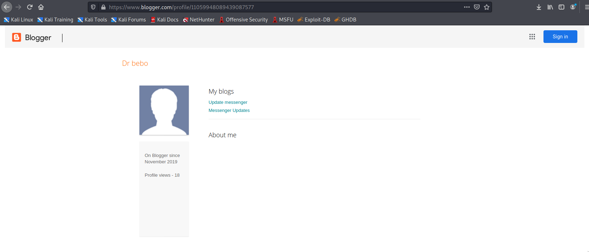
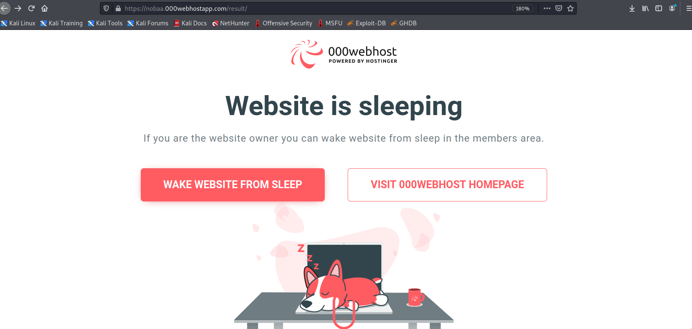

Since my last post about my investigations of a Facebook phishing site, I have received several messages from friends asking me to check out other suspected phishing/scam sites. One of the most alarming out of them was this one where I was able to find the file where the scammer stores the phished usernames and passwords.

This particular phishing site conducts its operations like this:
- An ad is shown on Facebook, promising free coupons for famous fast food restaurants
- Clicking on the ad takes the user to a fake Facebook login page hosted on blogger.com
- Login page then sends phished username and passwords to a PHP file hosted on 000webhost
The phished passwords are then stored in a .txt file (blatantly named, victims.txt), which is publicly accessible on an open directory. Getting to this directory involved following the scripts and the URLs used by the scammers. It's not that hard to find as long as you know where to look.
What's scary is that the size of this text file kept on getting bigger. I knew I had to act quickly.
Stopping the scammers
Unfortunately, with phishing sites like these, there's not much we could do but report it to the relevant hosting providers. The problem is that sometimes it may take some time before the site gets reviewed, which is excruciating because the longer the wait, the more people fall victim. Some might even just ignore your report altogether!
I reported the fake login page to Blogger.com and did not receive any response at all. I understand that Blogger.com is a big platform and I bet they receive numerous reports like this. I guess this is why the scammer used this platform as they know they won't be taken down too quickly. Their profile even listed two sites that both had fake login pages.

Thankfully, 000webhost got back to me and eventually took down the page that hosted the PHP and text files.

You'd think that this is a victory. But sadly, setting up a new phishing site is rather easy so within a few hours there is already a new one. Of course, I reported this new site too. Only for a new one to pop up later...
You can see how this can become an endless cat and mouse game.
Stopping from other sources
One way that could be effective to stop the scammer's operations is by reporting the Facebook advertisement that is used to lure users to the phishing site. Unfortunately, my friend who shared this with me did not get a chance to snap a screenshot of the ad. If he did then it would probably have more impact on stopping their operations. Maybe the Facebook abuse team can trace the payment details used to pay for the ad, and maybe block it.

If you know anyone who may have seen a Facebook advertisement that offers free coupon codes for fast food restaurants that might be pointing to a suspicious login page, then please do contact me!
Awareness is the key
As of this posting, the landing page is still up while the page that hosts the PHP and victims file is down. I'm sure it'll be back up soon. All I was able to do was delay their operations. A minor inconvenience for them.

This is why out of everything, spreading awareness is the best countermeasure. If people are more aware of phishing sites and how to avoid them then that would greatly diminish their impact. This is why I continue to post and write about phishing sites. Seeing the number of victims rising like that made me act knowing that I at least have the power to prevent things from escalating.
And you have the power too, dear reader. Educate your family and friends by warning them or by showing them my posts. Remember, awareness is our best defense!